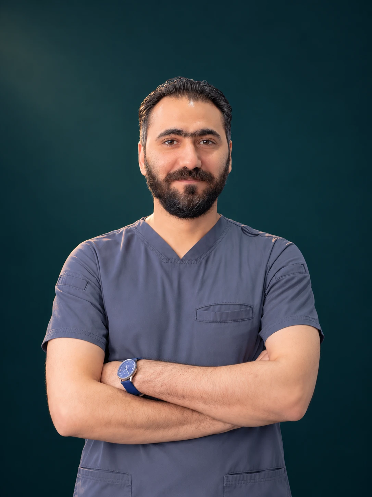

01 / RESTORATIVE
تركيبات الأسنان
مناقشة خيارات التركيبات المناسبة لحالة الأسنان، مع الاهتمام بالشكل والوظيفة والتناسق مع الابتسامة.
استفسر عن التركيبات ↗أكثر من ٢٠ عامًا في طب وتجميل الأسنان
تفكّر في تركيبات الأسنان أو تجميل ابتسامتك؟ ناقش الخيارات المناسبة لحالتك مع د. محمد راضي في صفوة المهيدب، فرع القيروان بالرياض.

01 — عن الدكتور
طبيب أسنان بخبرة أكثر من ٢٠ عامًا في مجال طب وتجميل الأسنان وتصميم ابتسامات هوليوود. يستقبلك حاليًا في صفوة المهيدب، فرع القيروان بالرياض.
الخطوة الأولى هي مناقشة ما ترغب في تغييره، وتقييم حالة أسنانك، ثم التعرف على الخيارات المناسبة قبل اتخاذ القرار.
تعرّف على الدكتور عبر إنستغرام ↗02 — ابتسامتك، خطوة بخطوة
مرّر لتكتشف كيف تتكامل عناصر الابتسامة.
ما الذي ترغب في تغييره؟ البداية من توقعاتك واحتياجك.
03 — خدمات الدكتور
لكل ابتسامة احتياج مختلف.
ناقش خياراتك مع الدكتور قبل اختيار الإجراء.
مناقشة خيارات التركيبات المناسبة لحالة الأسنان، مع الاهتمام بالشكل والوظيفة والتناسق مع الابتسامة.
استفسر عن التركيبات ↗مناقشة تناسق شكل الأسنان ولونها ومظهر الابتسامة، وتحديد مدى ملاءمة الخيارات التجميلية لحالتك.
استفسر عن تجميل الابتسامة ↗تُحدّد ملاءمة الإجراء والخطة والتكلفة بعد الكشف. تختلف النتائج من شخص لآخر.
مساحة لأسئلتك. ووقت لقرارك.
04 — زيارتك الأولى
أرسل اسمك ورقمك والخدمة التي ترغب بمناقشتها عبر واتساب.
تواصل مع فريق الحجز لمعرفة الأوقات المتاحة وتأكيد زيارتك.
ناقش احتياجك والخطة المقترحة والتكلفة مع الدكتور قبل بدء العلاج.
05 — نبدأ من هنا
اترك بياناتك، ثم أكمل إرسال طلبك في واتساب إلى فريق الحجز.
إجابات تهمك
في صفوة المهيدب، فرع القيروان بمدينة الرياض. يمكنك التواصل عبر 0537008898 لتأكيد الموعد ومعرفة تفاصيل الزيارة.
اختر «استشارة لتحديد الأنسب» في النموذج. تحديد الإجراء يحتاج إلى كشف ومناقشة حالتك وتوقعاتك مع الدكتور.
النموذج يجهز رسالة واتساب فقط. بعد إرسالها يتواصل معك فريق الحجز لتحديد الوقت المتاح وتأكيد الموعد.
تُناقش التكلفة وعدد الزيارات بعد تقييم الحالة وتحديد الخطة المناسبة. يمكنك الاستفسار من فريق الحجز عن رسوم الاستشارة.
قريبون منك في شمال الرياض
صفوة المهيدب لطب الأسنان — فرع القيروان، الرياض